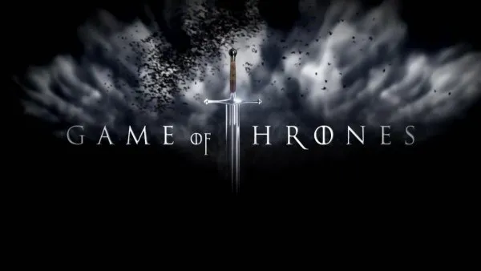
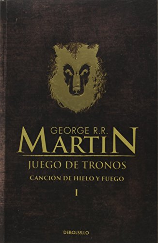
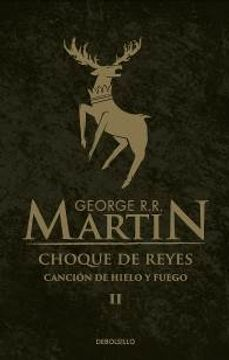
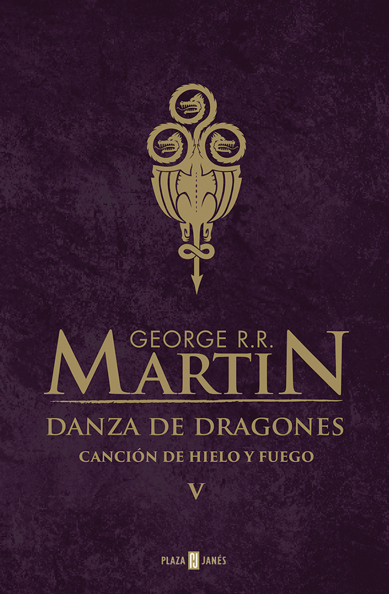

ORDEN DE LOS LIBROS JUEGO DE TRONOS
Juego de Tronos es el nombre de la serie con la que se ha bautizado a Canción de fuego y hielo, que es la saga de novelas fantásticas escrita por George R. Martin y que goza de gran éxito en todo el mundo, además de contar con una popular serie televisiva que ha provocado que sean cada vez más los que descubren estas novelas. Si no sabes cuál es el título o el orden de los libros de Juego de Tronos, a continuación os lo resumimos y os hablamos un poco más sobre futuras publicaciones que su sumarán a la colección de estos libros juveniles.
- Juego de Tronos (A Game of Thrones, 1996).
- Choque de Reyes (A Clash of Kings, 1998).
- Tormenta de Espadas (A Storm of Swords, 2000).
- Festín de Cuervos (A Feast for Crows, 2005).
- Danza de Dragones (A Dance with Dragons, 2011).
- Vientos de Invierno (The Winds of Winter).
- Sueño de primavera (A Dream of Spring).
JUEGO DE TRONOS
A game of Thrones, escrita en 1996 y publicada en España en 2002. Juego de Tronos hace referencia a un mundo ficticio de cuatro continentes que han sido testigos de las más grandes batallas épicas de la historia. De la historia ficticia, se entiende. Comenzó con la Guerra de los Primeros Hombres contras los Hijos del Bosque y alcanza hasta la Guerra de los Cinco Reyes. En la trama hay de todo: guerras por supuesto, pero también historias de amor, asesinatos, conspiraciones, sabotajes. Veremos a lo largo de sus páginas cómo los Siete Reinos de Poniente luchan por el control del Trono del Hierro y, con él, con el dominio de los Siete Reinos. Una lucha que seguiremos en las siguientes entregas de la saga.
CHOQUE DE REYES
A clash of Kings, escrita en 1998 y publicada en España en 2003. Es el segundo libro de la saga y, al igual que sus predecesoras, en esta novela se mezclan elementos mágicos con giros inesperados y una variedad de personajes muy ambiguos y de personalidad compleja. La trama se desarrollará ambientada en la Edad Media y un continente irreal de Poniente. En la trama ha estallado la guerra civil que ya se inició en Juego de Tronos y todos los reinos de Ponientes están inmersos en la que se conoce como Guerra de los Cinco Reyes.
TORMENTA DE ESPADAS
A storm of swords, escrita en 2000 y publicada en España en 2005, costa de dos volúmenes. La tercera parte de la saga muestra un mundo destruido por la guerra y a los luchadores casi derrotados. Se hacen alianzas para intentar remontar pero estas alianzas son efímeras y al mismo tiempo se van desarrollando intrigas y conspiraciones palaciegas.
FESTÍN DE CUERVOS

A feast for crows, escrita en 2005 y publicada en España en 2007. En la cuarta entrega, los campos ya están devastados por la guerra y gran parte del Poniente está derruido. Sin embargo, en paralelo al reino van surgiendo intrigas nuevas que sumergen al lector de nuevo en la trama. La guerra se ha tomado una tregua y, en mitad de ella, cada una de las partes hacen su lucha cumplir alguna misión, como por ejemplo, La Casa Lannister hace todo lo que está a su alcance tratando de obtener la hegemonía en Poniente. Mientras que en las Islas del Hierro se busca nuevo rey.
UNA DANZA CON DRAGONES
A dance with dragons, la última de las publicadas hasta la fecha. Salió a la venta en 2012. En la quinta entrega de la saga, el Norte vuelve a estar en peligro, mientras que en Meereen Daenerys Targaryen quiere liberar a los esclavos. Por otro lado, conoceremos a un enano parricida, un príncipe de incógnito, junto a un capitán y un caballero que son llamados por los dragones.
Los libros que aún están pendientes por salir son los siguientes: Vientos de Invierno (The Winds of Winter). Esta sexta entrega se está haciendo de rogar puesto que ya se había hablado de dos plazos de publicación, el último el verano de 2020, y el tiempo ha pasado pero no ha llegado a las librerías. Martin ha comunicado que podría estar terminando dicho libro, que el confinamiento por el covid-19 ha supuesto que esté dedicando más horas a escribir sobre sus amigos de Poniente, cito «Mi vida está en casa, esperando, y estoy pasando el tiempo con mis amigos en Poniente… Y con esa chica sin nombre allá en Braavos». Los medios que se atreven a hablar de fechas plantean que tal vez, podamos leerlo en 2021. La realidad es que tras 9 años de espera todavía nos queda la duda de si finalmente verá la luz. Sueño de primavera (A Dream of Spring). Es importante tener en cuenta que éste es el título provisional que se le ha dado a la espera y deseada séptima entrega de la saga, pero la realidad es que no hay nada confirmado o cerrado completamente, pues puede variar. Al igual que lo que se plantea sobre este libro es que sería el final de la saga, el cierre a años de compartir con todos los personajes de Canción de Fuego y Hielo. ¿Cuándo se plantea la fecha de entrega? Como ya sabéis, el proceso de escritura y de creación es lento, llevadero y más cuando se trata de una obra en la que hay tantas expectativas, un desarrollo de los personajes tan elaborados y también del contexto, por lo que nadie se aventura a decir cuántos años esperaremos.